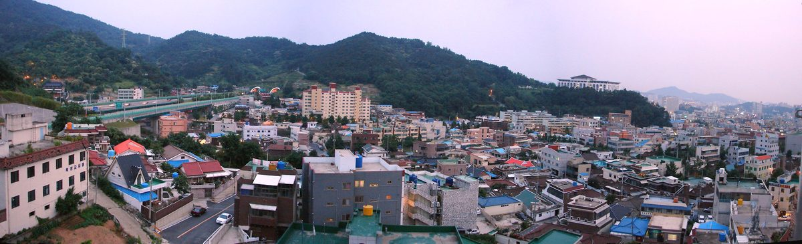

광주 전력자립률 9.3%·전남 197.9%로 21.3배 격차…광주기후에너지진흥원, 햇빛·바람연금 참여 자격·배분 기준 명확히 해야

통합 이전 2023년 기준 분석…두 지역 지역에너지계획 133개 사업은 기간·지표 달라 단순 통합 어려워, 2035년 재생에너지 설비 목표 합계 3만8,858MW
전남광주통합특별시 출범 전인 2023년 광주의 전력자립률은 9.3%, 전남은 197.9%로 두 지역의 격차가 21.3배에 이른 것으로 분석됐다. 광주기후에너지진흥원이 25일 펴낸 '탄소중립 정책브리프 제14호'에 따르면 두 지역의 차이는 188.6%포인트로, 광주는 자체 발전 기반이 약한 소비 도시, 전남은 지역에서 쓰는 양의 두 배 가까운 전기를 만드는 공급 지역이었다. 같은 해 최종에너지 소비는 광주 237만5,000TOE, 전남 4,101만6,000TOE로 17.3배 차이가 났고, 광주는 가정·상업과 수송 등 생활·서비스 부문이 78.6%, 전남은 산업 부문이 89.6%를 차지했다. 통합 전에 세운 제6차 지역에너지계획은 광주 2026~2030년 61개, 전남 2025~2029년 72개 등 모두 133개 사업이지만, 진흥원은 계획 기간과 목표 지표가 달라 단순히 합쳐서는 효과를 기대하기 어렵다고 봤다. 재생에너지 누적 보급 목표는 2035년 광주 1,096MW, 전남 3만7,762MW로 합계 3만8,858MW이며, 이는 설비용량이어서 실제 발전량과는 구분해야 한다. 진흥원은 전남의 높은 자립률이 지역·시간대별 전력망 수용능력까지 보장하지는 않는다며 접속 대기와 출력제한, 송배전망 확충 일정을 함께 검토하고, 전남의 햇빛·바람연금과 주민참여형 발전사업을 넓히되 참여 자격과 수익 배분 기준을 명확히 하고 운영정보를 공개해야 한다고 제안했다.
시민에너지 관점
전남이 쓰고도 남는 전기를 만드는 동안 광주는 필요한 전기의 10분의 1도 스스로 만들지 못한다는 숫자는, 통합특별시의 에너지 정책이 발전소가 몰린 곳과 전기를 쓰는 도시 사이의 이익 나눔부터 다시 짜야 함을 보여 준다. 연금이 커질수록 누가 얼마를 받느냐를 두고 주민 사이 갈등이 커질 수 있다는 우려가 있지만, 기준을 미리 정해 공개하면 갈등은 오히려 줄어든다. 아일랜드는 재생에너지 지원제도(RESS) 경매에서 낙찰된 사업이 생산 전력 1MWh당 2유로를 지역사회 기금에 내도록 하고, 발전소 가까이 사는 가구에 먼저 돌아가도록 배분 원칙을 미리 정해 두었다. 햇빛·바람연금도 참여 자격과 배분 기준, 운영정보를 조례로 공개하는 데서 나아가, 광주 시민이 전남의 발전소에 함께 출자해 지분을 갖는 통합특별시형 공동 소유로 넓혀야 한다.
출처: 광주일보 2026-10-25 정병호 원문 보기
光州の電力自給率9.3%・全南197.9%で21.3倍の格差…光州気候エネルギー振興院、日差し・風年金の参加資格と配分基準の明確化を提言
統合前の2023年基準で分析…両地域の地域エネルギー計画133事業は期間・指標が異なり単純統合は困難、2035年の再エネ設備目標は合計3万8,858MW
全南光州統合特別市が発足する前の2023年、光州の電力自給率は9.3%、全羅南道は197.9%で、両地域の格差は21.3倍に達していたとの分析が出た。光州気候エネルギー振興院が25日に発行した「カーボンニュートラル政策ブリーフ第14号」によると、両地域の差は188.6ポイントで、光州は自前の発電基盤が弱い消費都市、全南は域内で使う量の2倍近い電気をつくる供給地域だった。同年の最終エネルギー消費は光州237万5,000TOE、全南4,101万6,000TOEで17.3倍の差があり、光州は家庭・商業と輸送など生活・サービス部門が78.6%、全南は産業部門が89.6%を占めた。統合前に策定された第6次地域エネルギー計画は、光州の2026〜2030年の61事業、全南の2025〜2029年の72事業の計133事業に上るが、振興院は計画期間と目標指標が異なるため、単純に合わせるだけでは効果を期待しにくいとみた。再生可能エネルギーの累積導入目標は2035年に光州1,096MW、全南3万7,762MWで合計3万8,858MWとなるが、これは設備容量であり実際の発電量とは区別する必要がある。振興院は、全南の高い自給率が地域・時間帯ごとの電力網の受け入れ能力まで保証するわけではないとして、接続待ち、出力制御、送配電網の拡充日程を併せて検討するとともに、全南の日差し・風年金と住民参加型発電事業を広げつつ、参加資格と収益配分の基準を明確にし、運営情報を公開すべきだと提言した。
市民エネルギーの視点
全南が使い切れないほどの電気をつくる一方、光州は必要な電気の10分の1すら自らつくれていないという数字は、統合特別市のエネルギー政策が、発電所の集まる地域と電気を使う都市との間の利益の分かち合いから組み直されるべきことを示している。年金が大きくなるほど、誰がいくら受け取るかをめぐって住民間の対立が深まるとの懸念もあるが、基準をあらかじめ定めて公開すれば、対立はむしろ減る。アイルランドは再生可能エネルギー支援制度（RESS）の入札で落札した事業に、発電量1MWh当たり2ユーロを地域社会基金に拠出させ、発電所の近くに住む世帯に優先して届くよう配分の原則をあらかじめ定めている。日差し・風年金も、参加資格と配分基準、運営情報を条例で公開することから一歩進めて、光州市民が全南の発電所にともに出資して持ち分を持つ、統合特別市型の共同所有へと広げるべきだ。
出典: 光州日報（Kwangju Ilbo） 2026-10-25 チョン・ビョンホ 原文を読む
光州电力自给率9.3%、全南197.9%相差21.3倍，光州气候能源振兴院建议明确阳光·风力年金的参与资格和分配标准
以合并前的2023年为基准分析…两地地区能源计划共133个项目因期限和指标不同难以简单整合，2035年可再生能源装机目标合计38,858MW
分析显示，在全南光州统合特别市成立之前的2023年，光州的电力自给率为9.3%，全罗南道为197.9%，两地差距达21.3倍。根据光州气候能源振兴院25日发布的《碳中和政策简报第14号》，两地相差188.6个百分点：光州是自身发电基础薄弱的消费型城市，全南则是发电量接近本地用电量两倍的供给型地区。同年终端能源消费量光州为237.5万TOE，全南为4,101.6万TOE，相差17.3倍；光州的家庭、商业和交通等生活服务部门占78.6%，全南的工业部门占89.6%。合并前制定的第六次地区能源计划中，光州2026～2030年有61个项目，全南2025～2029年有72个项目，合计133个，但振兴院认为两地的计划期限和目标指标不同，简单合并难以见效。可再生能源累计装机目标为2035年光州1,096MW、全南37,762MW，合计38,858MW，这是装机容量，应与实际发电量区分。振兴院指出，全南较高的自给率并不能保证各地区、各时段电网的接纳能力，建议同时检讨并网等待、限电和输配电网扩建日程；在扩大全南阳光·风力年金和居民参与型发电项目的同时，明确参与资格和收益分配标准，并公开运营信息。
市民能源视角
全南发出的电用不完，而光州连所需电力的十分之一都无法自给，这组数字说明，统合特别市的能源政策应当从发电站集中地区与用电城市之间的利益分享重新设计。有人担心年金规模越大，居民之间围绕谁拿多少的矛盾就越深，但如果事先确定并公开标准，矛盾反而会减少。爱尔兰规定，在可再生能源支持计划（RESS）拍卖中中标的项目须按每MWh发电量2欧元向社区基金缴款，并事先确定分配原则，让住在电站附近的家庭优先受益。阳光·风力年金也应在以条例公开参与资格、分配标准和运营信息的基础上更进一步，扩展为光州市民共同出资、持有全南电站股份的统合特别市型共同所有模式。
来源: Kwangju Ilbo 2026-10-25 Jeong Byeong-ho 查看原文
Gwangju's power self-sufficiency at 9.3% versus South Jeolla's 197.9%, a 21.3-fold gap; Gwangju climate energy agency calls for clear eligibility and allocation rules for sunlight and wind pensions
Analysis based on 2023, before the merger; the two regions' 133 energy-plan projects run on different periods and indicators and cannot simply be merged; combined 2035 renewable capacity target is 38,858MW
In 2023, before the launch of the merged Jeonnam-Gwangju Special City, Gwangju generated 9.3% of the electricity it used while South Jeolla Province generated 197.9%, a 21.3-fold gap, according to an analysis. Carbon Neutrality Policy Brief No. 14, published on the 25th by the Gwangju Climate and Energy Agency, puts the difference at 188.6 percentage points, describing Gwangju as a consuming city with little generation of its own and South Jeolla as a supplying region that produces nearly twice what it uses. Final energy consumption that year was 2.375 million TOE in Gwangju and 41.016 million TOE in South Jeolla, a 17.3-fold difference; in Gwangju, households, commerce and transport accounted for 78.6% of consumption, while industry made up 89.6% in South Jeolla. The sixth regional energy plans drawn up before the merger contain 133 projects in total, 61 for Gwangju over 2026-2030 and 72 for South Jeolla over 2025-2029, but the agency judged that because their periods and target indicators differ, simply combining them is unlikely to work. Cumulative renewable capacity targets for 2035 are 1,096MW for Gwangju and 37,762MW for South Jeolla, 38,858MW combined, figures that refer to installed capacity and should be kept distinct from actual generation. The agency said South Jeolla's high self-sufficiency does not guarantee grid capacity in every area and at every hour, and recommended reviewing connection queues, curtailment and transmission and distribution build-out together, while expanding South Jeolla's sunlight and wind pensions and resident-participation generation projects with clear eligibility and profit-allocation rules and public disclosure of operating information.
Citizen Energy View
That South Jeolla produces more electricity than it can use while Gwangju cannot generate even a tenth of its own needs shows that the merged city's energy policy has to be rebuilt around sharing benefits between the places that host power plants and the city that consumes the power. Some worry that the bigger the pensions grow, the sharper disputes among residents over who gets how much will become, but setting and publishing the rules in advance tends to reduce conflict rather than increase it. Ireland requires projects that win its Renewable Electricity Support Scheme (RESS) auctions to pay 2 euros per MWh generated into a community benefit fund and sets allocation principles in advance so that households living closest to the plant benefit first. The sunlight and wind pensions should go beyond publishing eligibility, allocation rules and operating information by ordinance and grow into joint ownership for the merged city, in which Gwangju residents also invest in and hold stakes in South Jeolla's power plants.
Source: Kwangju Ilbo 2026-10-25 Jeong Byeong-ho Read the original